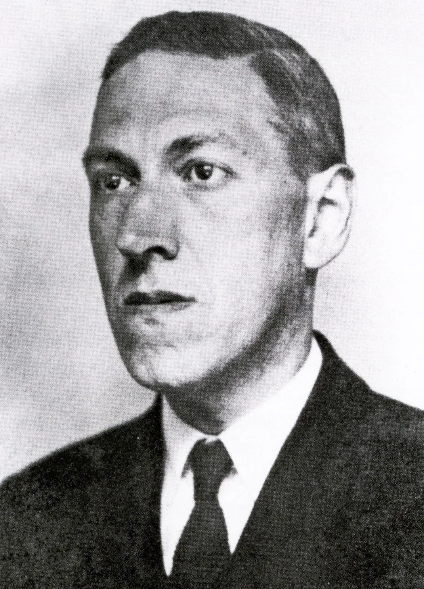
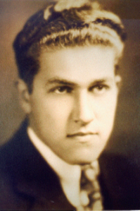
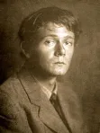
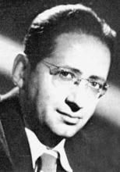

H.P. Lovecraft
Author Bio
Howard Phillips Lovecraft was an American writer of weird, science,
fantasy, and horror fiction. He is best known for his creation of
the Cthulhu Mythos.
Born in Providence, Rhode Island, Lovecraft spent most of his life
in New England. After his father's institutionalization in 1893, he
lived affluently until his family's wealth dissipated after the
death of his grandfather. Lovecraft then lived with his mother, in
reduced financial security, until her institutionalization in 1919.
He began to write essays for the United Amateur Press Association,
and in 1913 wrote a critical letter to a pulp magazine that
ultimately led to his involvement in pulp fiction. He became active
in the speculative fiction community and was published in several
pulp magazines. Lovecraft moved to New York City, marrying Sonia
Greene in 1924, and later became the center of a wider group of
authors known as the "Lovecraft Circle". They introduced him to
Weird Tales, which became his most prominent publisher. Lovecraft's
time in New York took a toll on his mental state and financial
conditions. He returned to Providence in 1926 and produced some of
his most popular works, including "The Call of Cthulhu", At the
Mountains of Madness, The Shadow over Innsmouth, and The Shadow Out
of Time. He remained active as a writer for 11 years until his death
from intestinal cancer at the age of 46.
Lovecraft's literary corpus is rooted in cosmicism, which was
simultaneously his personal philosophy and the main theme of his
fiction. Cosmicism posits that humanity is an insignificant part of
the cosmos and could be swept away at any moment. He incorporated
fantasy and science fiction elements into his stories, representing
the perceived fragility of anthropocentrism. This was tied to his
ambivalent views on knowledge. His works were largely set in a
fictionalized version of New England. Civilizational decline also
plays a major role in his works, as he believed that the West was in
decline during his lifetime. Lovecraft's early political views were
conservative and traditionalist; additionally, he held a number of
racist views for much of his adult life. Following the Great
Depression, Lovecraft's political views became more socialist while
still remaining elitist and aristocratic.
Throughout his adult life, Lovecraft was never able to support
himself from his earnings as an author and editor. He was virtually
unknown during his lifetime and was almost exclusively published in
pulp magazines before his death. A scholarly revival of Lovecraft's
work began in the 1970s, and he is now regarded as one of the most
significant 20th-century authors of supernatural horror fiction.
Many direct adaptations and spiritual successors followed. Works
inspired by Lovecraft, adaptations or original works, began to form
the basis of the Cthulhu Mythos, which utilizes Lovecraft's
characters, setting, and themes.
Lovecraft Circle

August William Derleth
February 24, 1909 - July 4, 1971
We will start things off with the most famous (or perhaps most infamous) of the Lovecraft Circle. August Derleth. Derleth, was one of the young correspondents and friends of H.P. Lovecraft. Lovecraft even paid homage to Derleth when he wrote of “le Comte d’Erlette” who was the French aristocrat and fictional author of Cultes des Goules, the name was inspired by the ancestral form of August Derleth’s family name.
When Lovecraft died in 1937, Derleth along with Donald Wandrei assembled a collection of Lovecraft’s stories and attempted to find a publisher for them. When they were unable to find anyone interested in the work they founded Arkham House publishing in 1939 to print the work themselves. Among many other things Derleth is also responsible for coming up with the term of “Cthulhu Mythos” which is a kind of umbrella term used by many people when talking about the different “Lovecraftian” monsters. Thus it should go without saying that Lovecraft’s work was saved from literary obscurity in large part to the work of August Derleth and Arkham House.
So why is it that the man who helped make Lovecraft famous is so unpopular with many Lovecraft fans? There are a number of reasons for this however I think the biggest problem that Lovecraft fans have with August Derleth is the fact that many people feel he used Lovecraft’s name to publish his own work. Following Lovecraft’s death, Derleth wrote a number of stories based on fragments and notes left by Lovecraft. These were published under the byline “H. P. Lovecraft and August Derleth”, with Derleth going so far as calling himself a “posthumous collaborator”. It is also believed that many of these stories were wrote entirely by Derleth and then published using Lovecraft’s name to help with selling his work.
Another reason is that Derleth’s own writing emphasized the struggle between good and evil, which were more in line with his own Christian views. This was in stark contrast with Lovecraft’s depiction of an amoral universe. Derleth also treated Lovecraft’s Old Ones as representatives of elemental forces, creating new entities to flesh out these ideas. Many of Derleth’s in the “Cthulhu Mythos” were very different from what Lovecraft himself would have approved of.
But what about Lovecraft encouraging other writers to take his ideas and run with them? Would Lovecraft have approved of Derleth’s ideas? We will never know what the man himself would have thought of his creations being used as examples of good and evil or primal forces. I personally think he would have supported the idea but disliked the writing. As for being “posthumous collaborator” I don’t think Lovecraft would have been very happy with this comment. Lovecraft was very particular about what he wrote and what he liked. I don’t think he would have appreciated having his name associated with writing that was not up to his standards. But that’s just my opinion…
Regardless of what you or I personally feel about August Derleth no one can deny that with him the world may never have been given the chance to enjoy the works of H.P. Lovecraft. If that means he gets to put his name next to Lovecraft’s on a book cover then perhaps that’s a small price to pay.

Clark Ashton Smith
January 13, 1893 – August 14, 1961
Smith was a poet, artist and writer who is best known for his contributions to Wierd Tales magazine around the same time that Lovecraft was writing and contributing as well. The publication of Ebony and Crystal in 1922 was followed by a fan letter from H. P. Lovecraft, which was the beginning of fifteen years of friendship and correspondence.
Like Lovecraft Smith was not very well off during his life. Unlike Lovecraft however Smith did find work doing other things such as picking fruit and wood cutting.
Smith wrote most of his weird fiction and Cthulhu Mythos stories, partially inspired by H. P. Lovecraft. Creatures of his invention include Aforgomon, Rlim-Shaikorth, Mordiggian, Tsathoggua, the wizard Eibon, and various others. In an homage to his friend, Lovecraft referred in some of his stories to a great dark wizard, “Klarkash-Ton.”
Smith’s stories form several cycles, called after the lands in which they are set: Averoigne, Hyperborea, Mars, Poseidonis, Xiccarph, Zothique. Stories set in Zothique belong to the Dying Earth subgenre.
Many of Smith’s stories were published in six hardcover volumes by August Derleth under his Arkham House imprint. Some of them were also collected as Lost Worlds Vols 1 and 2.

Robert Bloch
April 5, 1917 – September 23, 1994
“Despite my ghoulish reputation, I really have the heart of a small boy. I keep it in a jar on my desk,”
Best known as the writer of Psycho, Robert Bloch was one of the youngest members of the Lovecraft Circle. As an avid fan of Weird Tales and the works of H.P. Lovecraft, a young Bloch wrote a fan letter to H.P.L. in 1933 and the two soon began to correspond on a regular basis. Not long after Bloch would begin to correspond with other members of the Lovecraft Circle such as Smith and Derleth.
Bloch’s early stories were very strongly influenced by Lovecraft. A number of his tales were set in the world of Lovecraft’s Cthulhu Mythos. Bloch should also be credited with the invention of several Mythos texts such as De Vermis Mysteriis and Cultes des Goules.
Perhaps the ultimate honor bestowed upon a young Bloch was to have Lovecraft use a thinly veiled likeness of himself used as the character Robert Blake in the story The Haunter of the Dark.
After Lovecraft’s death (which effected Bloch deeply) he began to explore different styles of writing. His later works would include, crime dramas, fantasy, science-fiction as well as horror. He would go on to win a Bram Stoker Award a Hugo and a World Fantasy Award. But the roots of his career began by emulating Lovecraft.